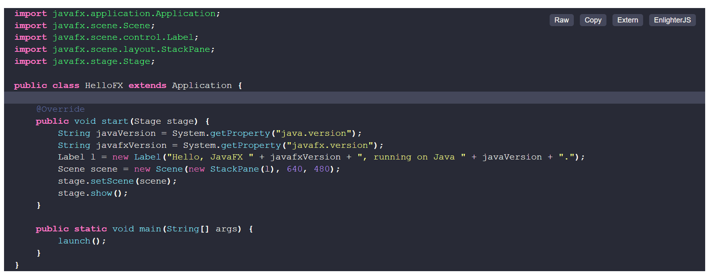
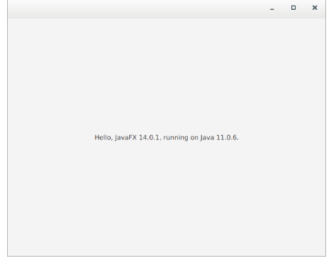

JavaFX es un conjunto de paquetes de gráficos y multimedia que permite a los desarrolladores diseñar, crear, probar, depurar e implementar aplicaciones de cliente enriquecidas que funcionan de manera consistente en diversas plataformas.
JavaFX amplía la potencia de Java permitiendo a los desarrolladores utilizar cualquier biblioteca de Java en aplicaciones JavaFX. De esta forma, los desarrolladores pueden ampliar sus capacidades en Java y utilizar la tecnología de presentación que JavaFX proporciona para crear atractivo visual. Como usuario, podrá ejecutar aplicaciones JavaFX en un explorador o arrastrarlos y soltarlos en el escritorio.
Las aplicaciones de JavaFX están escritas como una API de Java, lo que permite que el código de las aplicaciones de JavaFX haga referencia a APIs de cualquier biblioteca de Java. Por ejemplo, las aplicaciones de JavaFX pueden utilizar bibliotecas de la API de Java para acceder a capacidades nativas del sistema y conectarse a aplicaciones de middleware basadas en servidores.
El aspecto y la apariencia de las aplicaciones de JavaFX se pueden personalizar. Las hojas de estilo en cascada (CSS) separan la apariencia y el estilo de la implementación, permitiendo a los desarrolladores concentrarse en la codificación. Los diseñadores gráficos pueden personalizar fácilmente el aspecto y el estilo de la aplicación a través de CSS. Si tienes experiencia en diseño web o si deseas separar la interfaz de usuario (UI) de la lógica de backend, puedes desarrollar los aspectos de presentación de la UI en el lenguaje de scripting FXML y usar código Java para la lógica de la aplicación. Si prefieres diseñar interfaces de usuario sin escribir código, puedes usar **JavaFX Scene Builder**. Mientras diseñas la interfaz, Scene Builder genera automáticamente el código en FXML, que luego puede ser integrado en un Entorno de Desarrollo Integrado (IDE) para que los desarrolladores agreguen la lógica de negocio.
 